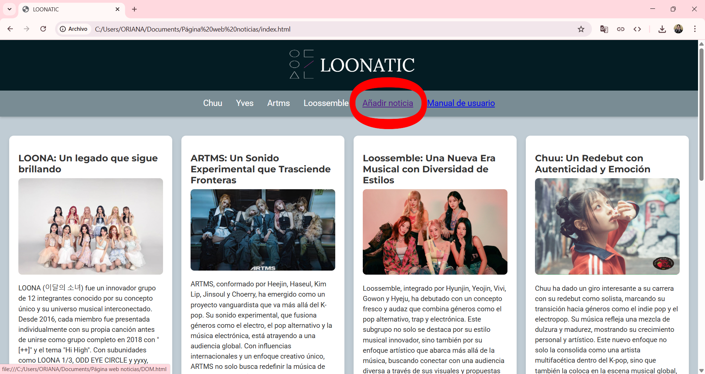
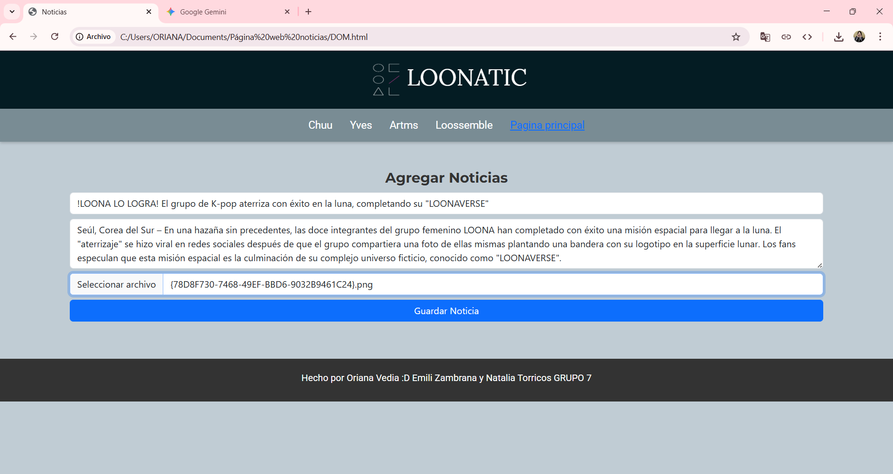
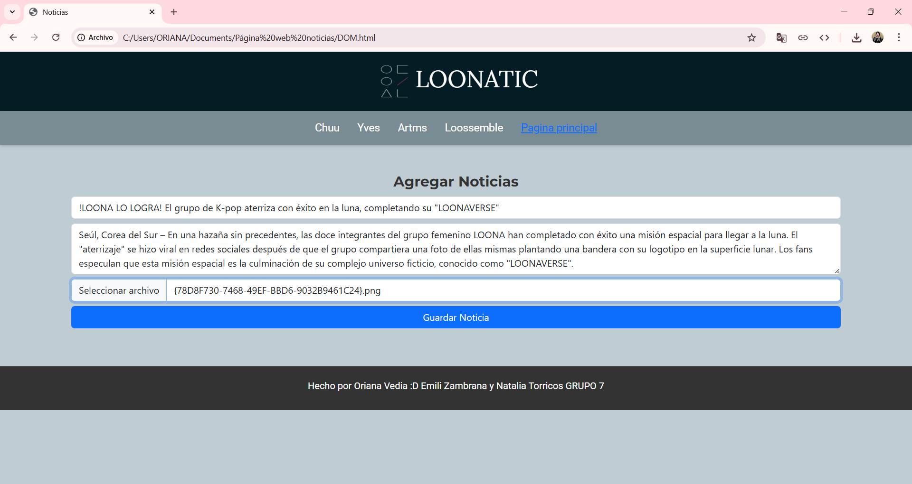
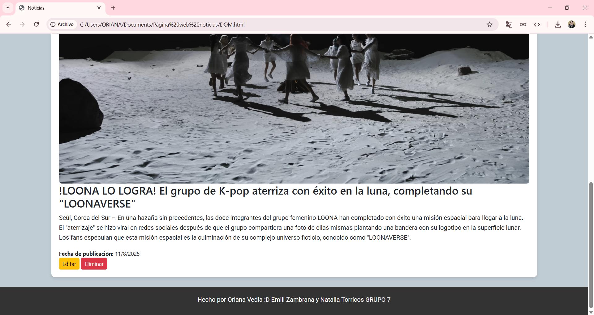
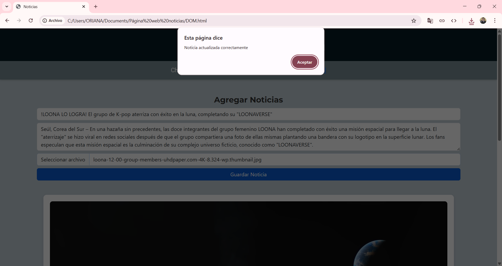
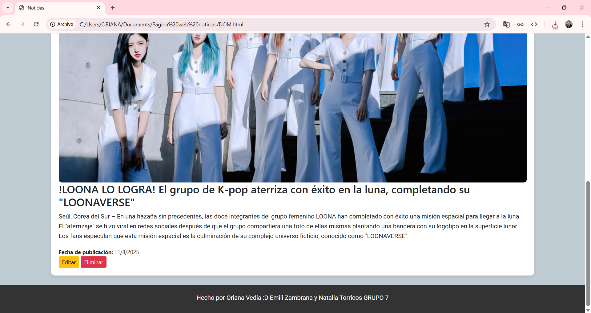

Autores: Oriana Vedia, Emili Zambrana y Natalia Torricos — Grupo 7
Sucre — Bolivia · 2025
1. Introducción
Este manual describe técnicamente la aplicación web LOONATIC, un portal de noticias centrado en LOONA y sus subunidades. La aplicación permite visualizar noticias, agregar nuevas noticias, editar y eliminar registros. El almacenamiento de las noticias se maneja mediante localStorage del navegador, por lo que no se requiere servidor o base de datos externa.
Conexión a Internet para cargar Google Fonts y Bootstrap (opcional).
Archivos en la misma estructura de proyecto: index.html, DOM.html, noticias.js, styles.css y la carpeta /images/.
3. Uso de la aplicación (paso a paso)
3.1 Abrir la aplicación
Accede a LOONATIC desde el servidor local o abriendo el archivo en el navegador. En la barra de navegación hay un enlace a Añadir noticia para añadir noticias.
3.2 Añadir una noticia
Ir a Añadir noticia.

Completar los campos: Titular, Texto y Imagen.

Presionar Guardar Noticia. El sistema validará que título y texto no estén vacíos.

La imagen se convertirá a Base64 y la noticia se guardará en localStorage.
3.3 Editar una noticia
En cualquiera de las páginas donde aparecen noticias, presionar el botón Editar de la noticia deseada.

El formulario en Añadir noticia se llenará con los datos actuales.
Modificar lo necesario y guardar: la entrada existente se actualizará en localStorage.

3.4 Eliminar una noticia
Presionar Eliminar en la noticia.

Confirmar en la ventana emergente. Si se confirma, la noticia se borra del DOM y de localStorage.